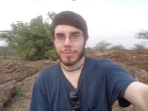
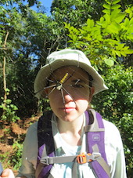
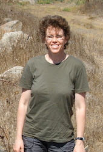
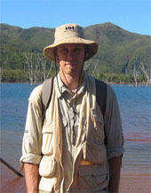
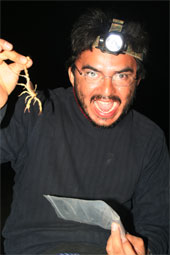
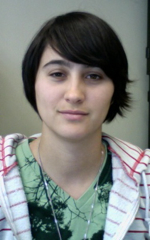

|  [email protected] | Jayson Slovak graduated with a BA in Biology from Queens College, CUNY. During his undergraduate studies he worked under Dr. Stephane Boissinot to see how population size affected abundance of Transposable Elements in the Threespine Stickleback. During his leap year he accompanied an expedition with Dr. Boissinot to Ethiopia to frog collect samples for his lab. He is currently a master student from City College working under Dr. Lorenzo Prendini since June 2016. His work will involve studying how the Great Rift Valley of Ethiopia affects Scorpion distribution and speciation in the region. |
|  [email protected] | Stephanie first came to the AMNH as a high school student participating in the High School Science Research Program of the Center for Biodiversity and Conservation with Felicity Arengo. In 2011, she completed her B.S. at Sewanee University in TN. During her B.S. she spent a summer working at the Field Museum of Natural History in Chicago as an NSF REU intern studying the evolution and biogeography of the Malagasy giant pill-millipedes, genus Sphaeromimus, under the guidance of Thomas Wesener and Petra Sierwald. Stephanie entered the Comparative Biology Ph.D. program at the AMNH Richard Gilder Graduate School in 2011 and graduated in 2015. Her dissertation focused on the evolution and biogeography of Southeast Asian scorpions, particularly the family Chaerilidae. |
|  | Tharina holds six degrees including two B.S. degrees, a Masters and a Higher Education Diploma from the University of Pretoria, South Africa. She was funded in part for a Ph.D. at Colorado State University, by a National Science Foundation Biodiversity Surveys and Inventories grant to Paula Cushing and Lorenzo Prendini, graduating in 2014. Tharina visited the AMNH on several occasions to study and image the extensive camel spider collection for her dissertation research on the cheliceral morphology of Solifugae and worked extensively with Prendini. She then returned to the National Museum of Namibia, Windhoek. |
|  [email protected] |
Lionel completed a B.Sc. at the University of Geneva and an M.Sc. revising the systematics of Liocheles scorpions at the Mus�um National d'Histoire Naturelle, Paris, graduating in 2000. Monod subsequently worked at the Mus�um d'Histoire Naturelle, Geneva. He visited the AMNH to work in the collections and Molecular Systematics Laboratory in November-December 2002 and, in 2005, Monod was awarded a Graduate Student Fellowship from the AMNH to conduct a Ph.D. thesis on the systematics and biogeography of Indo-Pacific liochelid scorpions, via the Ph.D. program in Ecology and Evolutionary Biology, City University of New York. He completed his Ph.D. in 2011 and now works as a Research Officer at the Mus�um d'Histoire Naturelle, Geneva. |
|  | Edmundo completed his B.S. and M.S. at the Universidad Nacional Aut�noma de M�xico (UNAM). In 2004, Edmundo moved to the AMNH, supported by a National Science Foundation REVSYS grant on vaejovid systematics awarded to Lorenzo Prendini. He was accepted into the Ph.D. program in Ecology and Evolutionary Biology, City University of New York, in 2005. For his dissertation he studied the systematic biology of the North American vaejovid scorpion subfamily Syntropinae. After graduating in 2012, he moved to the Laboratorio Nacional de Gen�mica para la Biodiversidad in Guanajuato, Mexico, where he continues his research on the evolution, phylogeny and biogeography of Mexican scorpions. |
|  | Lauren first came to the AMNH in 2002 as an undergraduate intern in the National Science Foundation (NSF) Research Experience for Undergraduates program, for a summer research project on the systematics of medically important African Parabuthus scorpions. After graduating with her B.S. from the University of Texas at El Paso, she was accepted into the Ph.D. program in Ecology and Evolutionary Biology, City University of New York, and returned to the AMNH to continue research on scorpions. She revised the systematics of the medically important North American scorpion genus Centruroides for her Ph.D. dissertation. She completed her doctorate degree in 2011 and is now at the California Academy of Sciences, where she is an Assistant Curator and Schlinger Chair of Arachnology. |